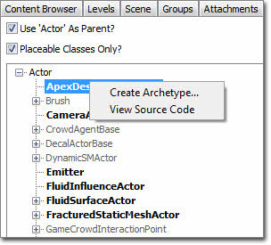

UDN
Search public documentation:
ActorsBrowserReferenceCH
English Translation
日本語訳
한국어
Interested in the Unreal Engine?
Visit the Unreal Technology site.
Looking for jobs and company info?
Check out the Epic games site.
Questions about support via UDN?
Contact the UDN Staff
日本語訳
한국어
Interested in the Unreal Engine?
Visit the Unreal Technology site.
Looking for jobs and company info?
Check out the Epic games site.
Questions about support via UDN?
Contact the UDN Staff
Actor 浏览器参考指南
概述
打开 Actor 类别浏览器
Actor 类浏览器界面

菜单栏
文件
- Open Package(打开包) - 从这里您可以打开编译好的 UnrealScript 代码 .u 包文件。
- Export All Scripts(导出所有脚本) - 这个选项用于导出所有的类别到 UnrealScript class .uc 文件中，以便稍后进行重新编译。
Docking(停靠状态)
- Docked(停靠) - 这个选项将会把当前浮动的浏览器停靠到主浏览器窗口中。在当前的浏览器处于停靠状态时，这个选项将处于选种状态。
- Floating(浮动) - 这个选项将会取消停靠浏览器到主要浏览器窗口的停靠状态，使它在自己的窗口中变为浮动的浏览器。在当前的浏览器处于浮动状态时，这个选项处于选中状态。
- Clone Browser(克隆浏览器) - 这个选项将会创建一个当前浏览器的副本。
- Floating Browser（浮动浏览器） - 这个选项将会移除或删除当前的浏览器。这个选项进行在有克隆的浏览器窗口存在时才启用。
工具栏
- Use Actor as parent?（使用 Actor 作为父项？） - 选中这个开关，以下显示的 Actor 树结构将把 "Actor" 作为最高的层次开始。如果不选中这项，那么 "Object" 便用为最高的层次。
- Placeable classes only?（仅可以放置的类别？） - 选中这个开关，则所有在其树节点下面没有可放置的类别的不可放置类别将会从 Actor 树结构中删除。可放置的 Actor 在 Actor 树种显示为粗体。
Actor 树结构
Actor 树结构显示了您可以使用的所有 Actor。要想在世界中放置一个 actor，可以在 Actor 树结构中选中那个 actor，然后右击其中一个视口的你想放置它的地方。当您右击时在弹出菜单上应该有这个选项： "Add Selected Actor Here（在这里添加 选中的 Actor ）" 注意有些 Actor 显示为粗体而有些则不是。显示为粗体的 Actor 是您可以放置的 Actor，其它的 Actor 仅是为了类别中的结构而存在。要想展开 Actor 树结构的一个分支，请点击 Actor 旁边的小方框内的加号标志，这样它将会在树中显示该 Actor 下面的所有 Actor。为了重新缩回 Actor 树结构的一个分支，可以通过点击 Actor 旁边的小方框内的减号来完成，它将会在树中隐藏它下面的所有 actor。关联菜单

在 Actor 树结构中的类可以通过右击显示关联菜单。在这些菜单中，您将会找到以下选项：- Create Archetype…（创建原型...） - 该选项可以创建一个新的原型，它以当前类为基础，稍后可以通过内容浏览器访问这个类进行修改。
- View Source Code（查看源代码） - 该选项将会在操作系统的默认文本编辑器中打开当前类的 UnrealScript 类。这是一个临时文件，仅供快速浏览代码使用。在这里不可以进行修改。